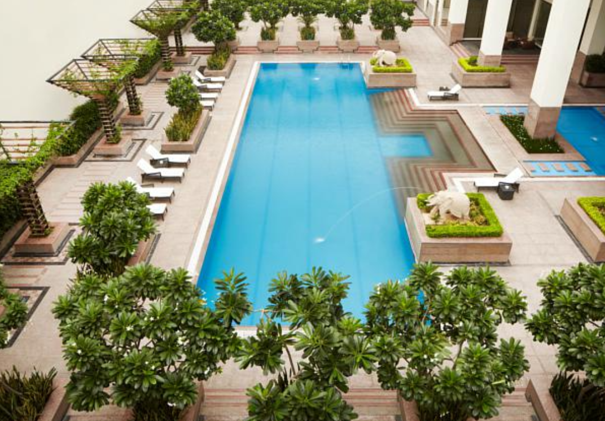
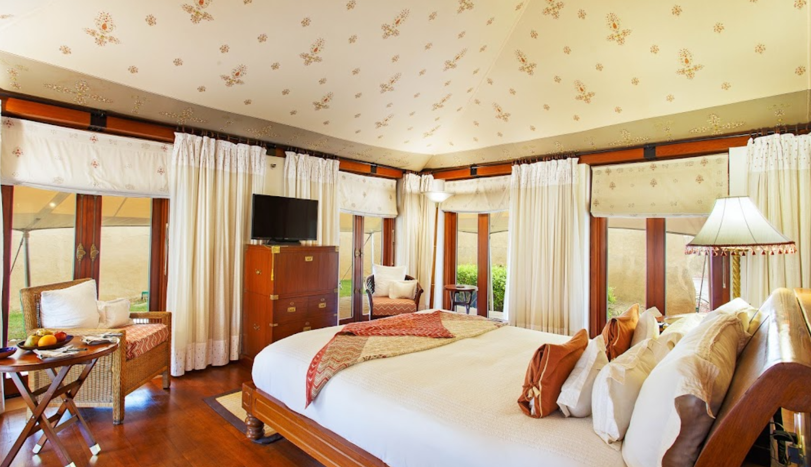
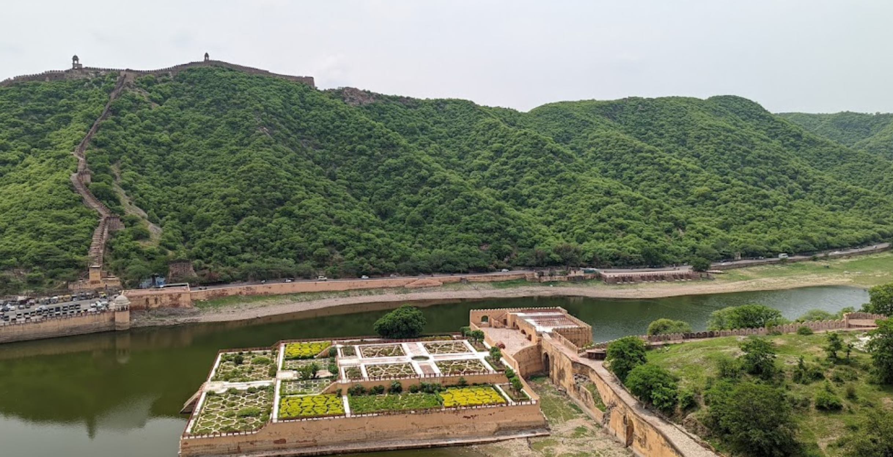
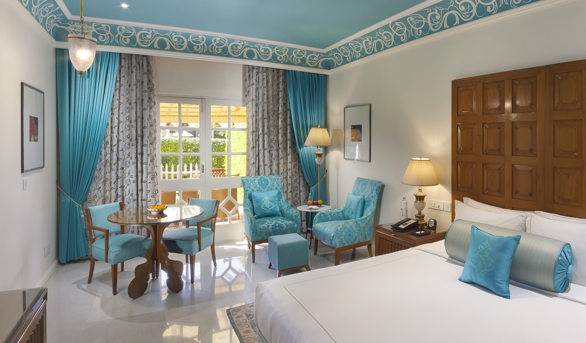

JAIPUR:Planned by Vidyadhar Bhattacharya, Jaipur holds the distinction of being the first planned city of India. Renowned globally for its coloured gems, the capital city of Rajasthan combines the allure of its ancient history with all the advantages of a metropolis. The bustling modern city is one of the three corners of the golden triangle that includes Delhi, Agra and Jaipur.

City Palace has stood at the heart of the Old City of Jaipur for nearly three centuries, shortly after Maharaja Sawai Jai Singh II decided to relocate his court from the city of Amber. Protected by huge guard walls, the fairy-tale-like structure is still the home of Jaipur's modern-day royal family, and is more extravagant and enchanting than you might imagine. City Palace is more than a sand-coloured regal abode–it's a sprawling complex of buildings built around a series of landscaped garden courtyards overlooking Jaipur and Lake Palace. The entire property is a stunning display of Rajasthani and Mughal architecture
address: Tulsi Marg,To visit the official site:click here.

At first glance, Jantar Mantar may look to be nothing more than a bunch of larger-than-life abstract sculptures. But this is not an art gallery–it's a special collection of astronomical tools started by Rajput ruler Jai Singh II to measure the heavens nearly 300 years ago. Each of the 20 or so structures at the UNESCO World Heritage Site serves a distixnctive purpose. The observatory's massive sun dial, known as Samrat Yantra, is particularly striking. At 27 meters tall, it casts a huge shadow that accurately measures time down to two seconds. Tip: It's worth hiring a private guide at Jantar Mantar if you want to learn how each of the structures work.
Address:To visit the official site:click here.

If you had any preconceived notions about how the buildings in Jaipur look, they probably came from Hawa Mahal (Palace of Breeze). It has all of the distinctive architectural features that appear in postcards of the city, from the salmon-pink, honeycombed facade, built to resemble the crown of Hindu god Krishna, to the geometric accents and rows of tiny windows.The landmark was built in 1799 to allow royal ladies to watch festivals on the street without being seen by the public. Its 953 windows allow plenty of breeze to pass through, making it an ideal summer palace.
Address:To visit the official site:click here.

Jaipur is home to one of India's most-visited forts: Amber Fort. Built in the year 1592, the sandstone and marble monolith stands atop a small hill roughly 20 minute's driving distance northeast of the centre of Jaipur. It's best known for being a pristine example of Rajasthani architecture. Getting to Amber Fort typically involves a short uphill hike that's well worth the effort. It's decked out with intricate patterns of inlaid marble in nearly every colour of the rainbow. The fort is laid out into four separate sections, each of which has spectacular garden courtyard outside. While you'd never know it from above, you can actually explore the fort's underground tunnels, some of which have been restored.
Address:| Image | HotelNames | Prices | Facilities | ||||||||||||
|---|---|---|---|---|---|---|---|---|---|---|---|---|---|---|---|
|  | Jaipur Marriot Hotel | 10,000 rupees | Restaurant, Bar, Fitness Center, Spa, Outdoor Pool, Meeting Space, Free Wifi, Activites, Check-in at 3pm, check-out at 12pm, minimum age for check in is 18, no pets. | ||||||||||||
|  | The Oberoi Rajvilas, Jaipur | 20,000 rupees | The Oberoi Rajvilas Jaipur offers unique 5-star accommodations in Jaipur City. Set amid beautiful greenery, this luxurious property features a pool, 3 dining options and free on-site parking. Free WiFi is available in the rooms of the property. Decorated with modern interiors and neutral color tones, the stylish rooms offer large windows that overlook the greenery. Each well-appointed room is equipped with a sofa seating area, flat-screen TV and bathroom with a bathtub. Guests can exercise at the gym or indulge in body treatments at the spa and salon. Ticketing and car rental arrangements can be made at the tour desk. Available for all-day dining, Surya Mahal & Courtyard serves international dishes and fine wines. Rajmahal restaurant offers Indian specialties for dinner, while wines and spirits are available at Rajwada Library Bar. Jaipur Oberoi Rajvilas is 5 mi from the City Center and 6.2 mi from Hawa Mahal. It is 8.7 mi from Jantar Mantar, Jaipur Railway Station and a 25-minute drive from Jaipur Airport. Couples in particular like the location – they rated it 8.8 for a two-person trip. | ||||||||||||
|  | ITC Rajputana, a Luxury Collection Hotel, Jaipur | 15,000 | Butler, shopping arcade, club, spa, free wifi, restuarant, concierge desk, banquets and meeting venues. | ||||||||||||
|  | Jai Mahal Palace | 15,000 | check-in from 2, check-out from 12, early/late check-in par request, kids program, activites, gardens and no pets. |